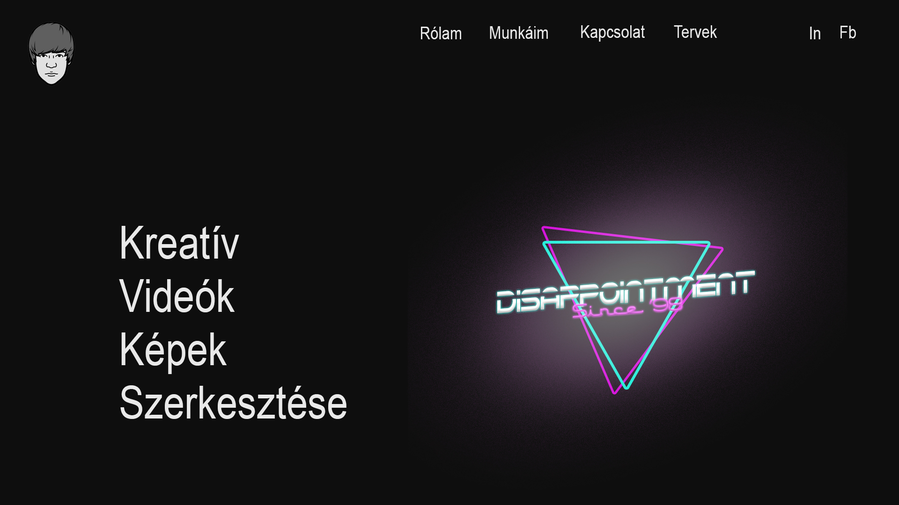
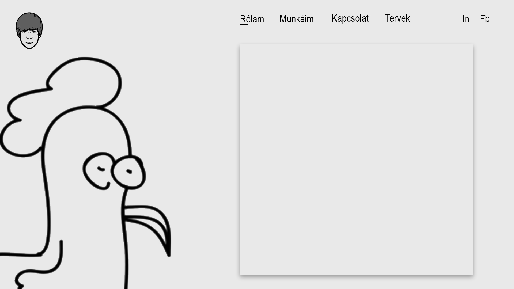

Tervleírás
Az eredeti grafikai terv az alábbi két képen látható. Többé kevésbe sikerült a design-t megvalósítani. Bootstrap használata nélkül a dolgom kicsit nehézkes volt, de legjobb tudásom szerint jártam el és elégedett vagyok a kész termékkel. A menüsávban eredetileg azt szerettem volna hogy hover esetén egy png jelenjen meg a kiválasztott gomb alatt, ám ebbe beletört a bicskám és egy másik stílusra álltam át. A projekt elkészítésében a www.w3schools.com segített nekem.

